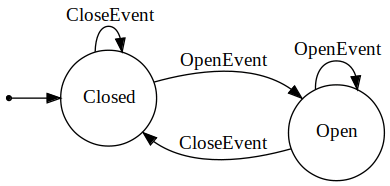

Tutorial: A basic door
Tutorial: A basic door¶
In this tutorial we will use the asap::fsm toolkit to implement a state machine simulating a door. We’ll start with two states (Closed and Open) and two events (Open and Close). The state machine can be represented by the following diagram:
{kind=link}
1#include <fsm/fsm.h>
2
3#include <iostream>
4
5using asap::fsm::ByDefault;
6using asap::fsm::DoNothing;
7using asap::fsm::On;
8using asap::fsm::StateMachine;
9using asap::fsm::TransitionTo;
10using asap::fsm::Will;
11
12struct OpenEvent {};
13struct CloseEvent {};
14
15struct ClosedState;
16struct OpenState;
17
18struct ClosedState :
19 // Using the state helpers to completely implement the state
20 // in a declarative way
21 Will<
22 // Default action is to do nothing
23 ByDefault<DoNothing>,
24 // Specific action on a specific event
25 On<OpenEvent, TransitionTo<OpenState>>> {};
26
27struct OpenState
28 : Will<ByDefault<DoNothing>, On<CloseEvent, TransitionTo<ClosedState>>> {};
29
30using Door = StateMachine<ClosedState, OpenState>;
31
32void PrintDoorState(const Door &door) {
33 std::cout << " > door is " << (door.IsIn<OpenState>() ? "open" : "closed")
34 << "\n";
35}
36
37auto main() -> int {
38 Door door{ClosedState{}, OpenState{}};
39 std::cout << "-- Starting\n";
40 PrintDoorState(door);
41
42 std::cout << "-- sending close event\n";
43 door.Handle(CloseEvent{});
44 PrintDoorState(door);
45
46 std::cout << "-- sending open event\n";
47 door.Handle(OpenEvent{});
48 PrintDoorState(door);
49
50 std::cout << "-- sending close event\n";
51 door.Handle(CloseEvent{});
52 PrintDoorState(door);
53}
The implementation is pretty straightforward for such a simple state machine:
Define the events. Event types don’t need to be complex types. In this case, they are simple type tags. In other more complicated cases, events can carry data as well.
Define the states.
We can completely implement states with simple transition logic, such as in this example, declaratively. In lines 18-25, we use the state helpers Will, On and ByDefault to implement the logic of the ClosedState.
Declare the State Machine. It’s always a good practice to use an alias for the State Machine type so that you don’t have to repeat the often very long type declaration.
From there on, using the state machine is a matter of injecting events into it via calls to its Handle() method.
If we run that example, this is what we get:
-- Starting
> door is closed
-- sending close event
> door is closed
-- sending open event
> door is open
-- sending close event
> door is closed
Notice how this implementation of the state machine is very basic to the point where we can close a closed door or open and open one with no error. We’d like to make it smarter so it can detect such cases and report the error to the user.
Head over to the next step to see how we can do that.